Predicting NHL Breakout Forwards Using Machine Learning
Introduction
Each year in the National Hockey League (NHL), there are players denoted as “breakout players”. Generally, this means that their stat production increased from one year to the next and made them a more valuable contributor to their team. Some of these players were not unexpected; highly touted prospects from the get-go who came with an expectation of stardom, and their production increase feels inevitable. Others, however, unexpectedly break out after years of average production or limited opportunity, making them seemingly appear out of nowhere.
Correctly identifying these players before their breakouts has long been one of the more difficult aspects of hockey analytics. Traditional statistics such as goals (G) and points (P) are useful for describing the current production of a player, but are often lackluster at indicating the future output of a player. Consequently, analysts have relied on advanced statistics and other metrics alongside the current production to uncover patterns or underlying potential that may lead to future value.
The goal of this project is to investigate whether machine learning tools are able to successfully identify breakout players before their breakout season occurs. A collection of metrics describing an individual player’s production, both on and beneath the surface, opportunity, and year-to-year development was constructed. Multiple models that classify players as breakout candidates were trained and evaluated.
In addition to evaluating model performance, this project examines case studies to illustrate the successes and limitations of this approach. Finally, the models were applied to the latest NHL season to identify breakout candidates for next season.
Data Documentation
The data used in this project were obtained from MoneyPuck.com, an independent hockey analytics website created by Peter Tanner. MoneyPuck provides NHL statistics from the 08-09 season to the current season publicly, including the traditional metrics such as goals and points but also advanced statistics such as Expected Goals (xG), specific data on shots such as their danger level (high, medium, low), possession metrics such as Corsi and Fenwick, and much more.
Player-level data for all NHL skaters were downloaded from MoneyPuck.com’s publicly available datasets and used to construct the models. These data served as a foundation for the project’s model development and feature engineering.
The author gratefully acknowledges MoneyPuck.com for making these data publicly available.
Defining a Breakout
While the term “breakout player” is commonly used to describe the concept of increased production and players becoming stars, there is no universally recognized definition of what makes up a breakout player. For this project, a hard line definition was set to avoid any issues. Firstly, the decision was made to set the scope of this project only at forwards. The standard for a good NHL defenseman is far too different than the standard for a good NHL forward, so it is best to separate them.
Then, it was defined that any player, to be considered a breakout player, must play in at least 60% of their team’s games in both the season before their breakout and the season of their breakout. This was done to avoid breakout candidates simply being players that were unavailable due to injuries and keep the sample size consistent. Instead of just setting 50 games played, which is approximately 60% of 82, the amount of games in the NHL regular season, 60% was chosen because some seasons in the dataset, namely the lockout shortened 2012-13 season, as well as the 2019-20 and 20-21 seasons shortened by the COVID-19 pandemic, did not have 82 games.
Next, it was chosen that a breakout player must have never achieved 60 points before their breakout season. This was set after some testing with the models, as the model was catching superstar players who had a down year and then bounced back as “breakouts”, when traditional thinking would correctly identify these players not as a breakouts but as bounce-backs. On a similar vein, it was also decided that the player’s breakout year points total must be a career high and be at least 40 points. This rule makes it so the breakout players are actual producers on ice, and the career high assists in catching more bounce-back players and filtering them out as ineligible to break out.
Finally, a couple of parameters surrounding the players points-per-game (PPG) statistic were chosen. The player’s PPG must increase by at least 20%, while the actual PPG stat itself must increase by .15. These were each chosen to make sure that players that broke out actually made meaningful improvements to their production, both on the literal scale of increasing their points per game output, but also meaningfully increasing the scaled PPG.
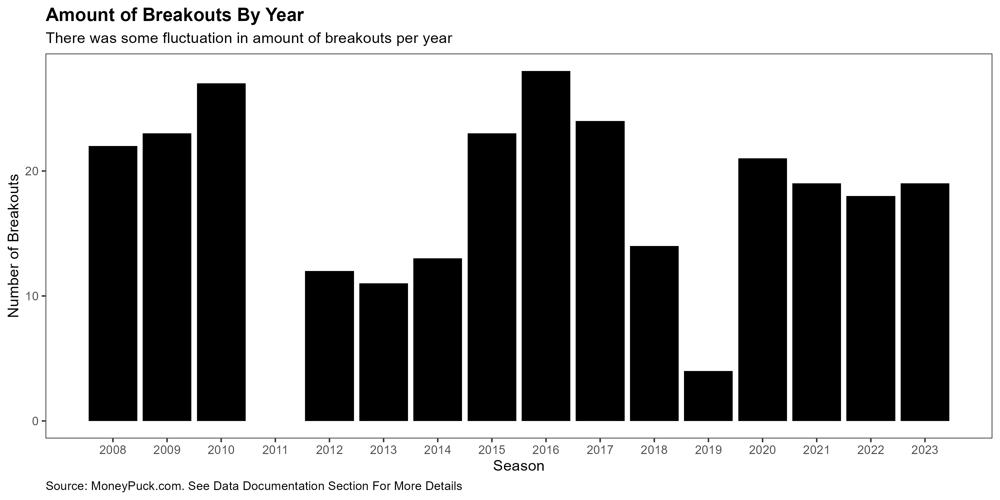
As seen in Figure 1, there was quite a large fluctuation of breakouts, and while the parameters were able to allow for some breakouts in the shortened seasons, there were far less breakouts produced than average. It was decided that while this is a shortcoming of the definition, it was a trade-off for creating a consistent set of parameters that was ultimately worth it for this project.
Feature Engineering
While the MoneyPuck.com dataset contained many valuable statistics, additional variables were engineered to help capture the growth, experience, and development of a player over time. The goal of feature engineering was to quantify how a player’s performance was changing from season to season.
Production Variables
Several statistics to quantify a player’s offensive production were included directly from the original dataset. These variables included goals, expected goals, high-danger expected goals, points per game, and Corsi percentage. These statistics were added because they measure both the on ice raw production of the player and their underlying ability to drive play.
Opportunity Variables
How much a player can produce is heavily influenced by how much opportunity they get on the ice. Therefore, it was deemed important to include variables that quantified this opportunity. To capture this, ice time was included, as well as offensive zone start percentage — the percent of a player’s shifts that begin in the offensive zone. These variables tell a story of how much opportunity a player gets on the ice and the trust level their coaches put in them.
Growth Variables
As a breakout player is hallmarked by their growth and production increase, several variables that indicate a player’s previous year-to-year growth were included. The one-year change in points, expected goals, icetime, shots, and Corsi were included to indicate this growth, as well as relative growth measures to account for differences in baseline production between players.
Long-Term Development Variables
In addition to year-to-year growth, two-year growth metrics were calculated to better describe a player’s broader development. These two-year changes in points, expected goals, and ice time help give a better understanding on how a player has been slowly growing and developing as a player as their career progresses. Additionally, the player’s previous career best points, and their experience in the league in years, were calculated and included to provide context for a player’s career stage.
In combining these metrics of production, opportunity, growth, and long-term development, the resulting feature set captured both the player’s current production and their long term trajectory, which determined whether there would be future improvement.
Building a Model
Once the target variable was defined and a feature set was established, the problem could now be classified as a binary classification task. For each player-season, the objective of a model was to predict whether the player would experience a breakout in the following season. More generally, the model estimated the probability that a player would satisfy the criteria previously established for a “breakout player”.
Choosing an Algorithm
During the development process, several different machine learning algorithms were considered to create the final model. Logistic regression was first used as a baseline model due to its simplicity and ability to easily be interpreted. Random forests were also heavily considered due to their ability to capture nonlinear relationships and interactions between the variables, prevalent in our feature set. Finally, Extreme Gradient Boosting (XGBoost) models were investigated due to their strong performance on tabular datasets. Their ability to model complex relationships without extensive preprocessing was also a deciding factor.
The usage of multiple different algorithms allowed for the exploration of the strengths and weaknesses of differing approaches to be compared without arbitrarily assuming a single modeling technique would provide the best results.
Train and Test Split
To correctly evaluate model performance on data it hadn’t seen before, the dataset was split into a training set and a testing set. This provided a more realistic estimate of the model performance as it was testing itself on data it had not seen before.
More specifically, the split was made to achieve a 70-30 split between the training data and the testing data. The easiest place to split to approximate this was following the 2020-21 season. This means that the training set was data from the very first season in the dataset, 2008-09, to the 2020-21 season, and that the testing set was data from 2021-22 to 2024-25. Notably, the most recent season, 2025-26, was not included in either set because the season was not over at the time this project was conceived.
Hyperparameter Tuning
The models hyperparameters were tuned through repeated experimentation. Parameters controlling variables such as tree depth, learning rate, and model complexity were adjusted in order to balance overfitting with performance. The objective of this tuning was to develop the most capable model to handle a new dataset of player-seasons, not just to create the most effective model to maximize performance on the training data.
Model Selection
Following the comparison of the different algorithms, XGBoost was selected as the primary modeling approach due to its strong performance in the evaluation phase. While the logistic regression model provided an excellent baseline, it failed to reach the same performance as either the random forest or XGBoost algorithms. Random forest provided competitive performance, but it failed to hit the same balance of predictive ability, flexibility, and calibration as XGBoost.
XGBoost’s ability to effectively capture nonlinear relationships between production, opportunity, and growth made it particularly well suited for this problem. As a result, subsequent analyses focused primarily on XGBoost models.
The performance and interpretation of the XGBoost models is examined in the following sections.
Model Evaluation
Evaluating the model’s effectiveness for breakout prediction proved to be a unique challenge because breakout players only represent a very small percentage of total player-seasons at around 3% of all player-seasons with the given parameters. Thus, a model built to maximize accuracy should give all players 0 probability to break out and it would be the most accurate model by far, despite providing no usefulness to solving the problem.
To rectify this, evaluation of the models primarily focused on two metrics. First, Precision at K (P@K) — sometimes hereafter also referred to as Top K Precision. It represents the proportion of actual breakout players contained in the top K of the model’s ranked list of breakout probabilities. For example, if a model’s top 10 in probability contained 4 true breakout players, it is said to have a P@10 or Top 10 Precision of 4, or 4/10 or 0.4. This method of evaluation was chosen because of its practicality given the problem the project is trying to solve. It directly evaluates how well a given model does at identifying correct breakout candidates, which can be extended and used in the present and future seasons.
The second metric used was Area Under the Receiver-Operating Curve (AUC). The Receiver-Operating Curve (ROC) is obtained by graphing the True Positive Rate (TPR) over the False Positive Rate (FPR), and the AUC is simply the area under that curve. It represents the probability that the model, if given a random negative result and a random positive result. In this case, it means ranking a player who indeed broke out above a player who did not. Therefore, the scale for AUC is 0 to 1, and a higher AUC indicates the model is better able to distinguish breakout players from non-breakout players.
Model Comparison
During the course of tuning a model, five different versions of XGBoost algorithm with different parameters and features were tested, as well as two different versions of Random Forest and a singular version of logistic regression. Performance of these models was compared using the evaluators AUC and Top-K Precision as explained in the previous section.
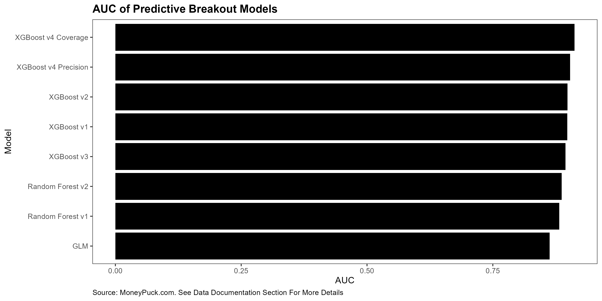
As seen in Figure 2, the XGBoost models dominated in terms of AUC. While the gains between the models were marginal, they were still gains, and the two models that eventually became the two models that were used, XGBoost v4 Precision and XGBoost v4 Coverage, were the two best models by AUC.
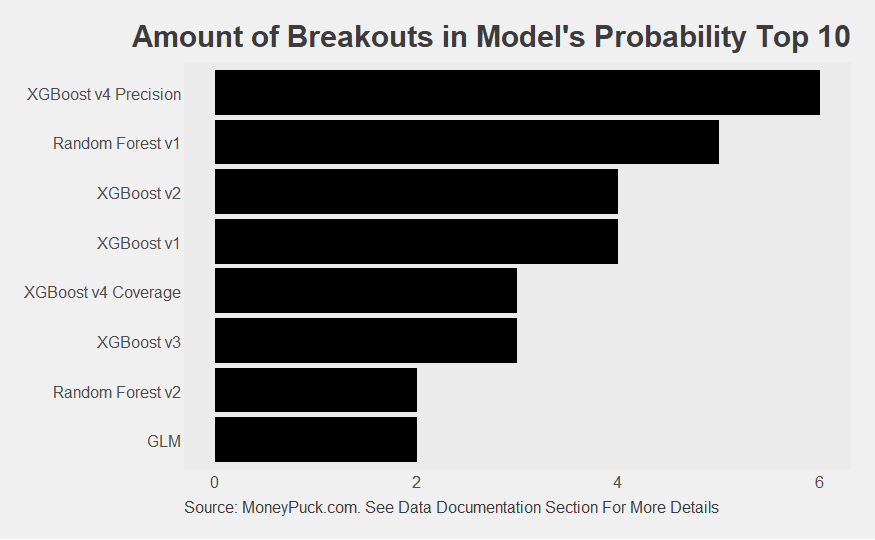
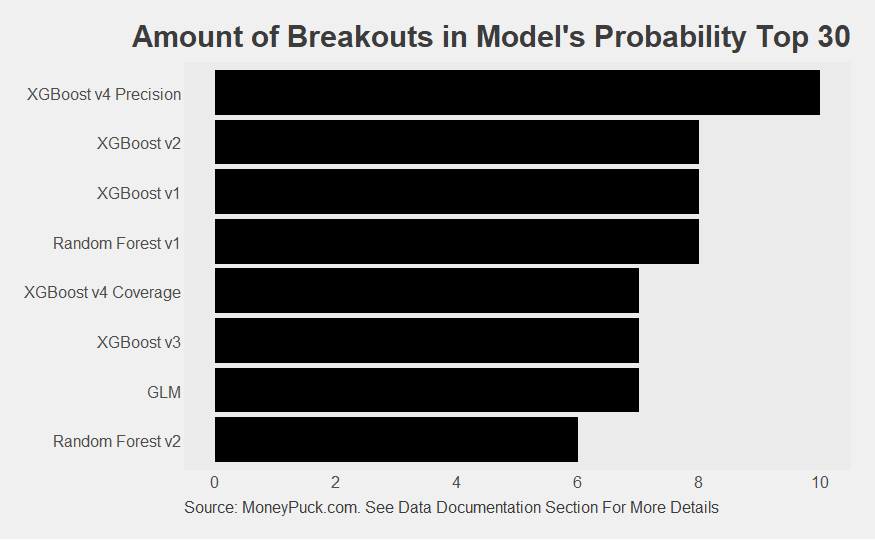
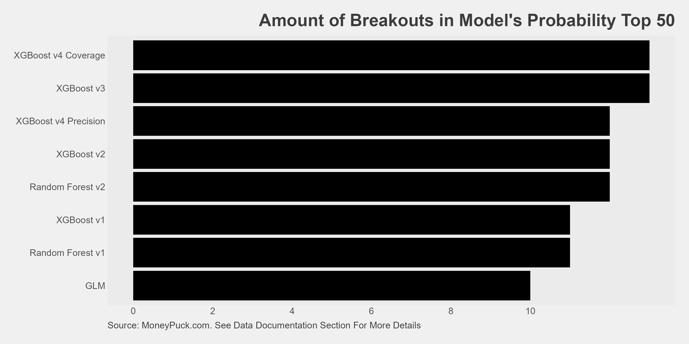
Figure 3, Figure 4, and Figure 5 show the P@K of each model. This produced some interesting insights that helped justify the model selection. Firstly, the XGBoost v4 Precision dominated Top-10 Precision, which landed it its name. It proved to be an incredibly precise model, taking in less features than the coverage model and tuning the parameters slightly differently, leading to a more precise top 10 and 30. The coverage model, however, falters in the top 10 and top 30, but shines in the 30-50 range, much like the XGBoost v3 model whose features it used. The hypertuning of the XGBoost v3 model gave the coverage model its AUC without sacrificing its Top-50 coverage, making it a useful model when used alongside the precision model.
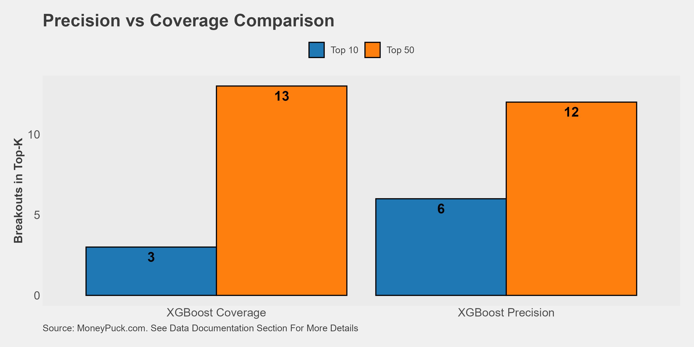
Figure 6 shows the contrast between the two models directly. We see the coverage model’s strength at the lesser level between the top 10 and the rest of the top 50, as well as the precision model’s strong top 10.
The following table summarizes each model used during the process’s performance with the evaluators.
| Model | AUC | P@10 | P@30 | P@50 |
|---|---|---|---|---|
| GLM | 0.8628 | 2 | 7 | 10 |
| XGBoost v1 | 0.8979 | 4 | 8 | 11 |
| Random Forest v1 | 0.8821 | 5 | 8 | 11 |
| XGBoost v2 | 0.8984 | 4 | 8 | 12 |
| Random Forest v2 | 0.8866 | 2 | 6 | 12 |
| XGBoost v3 | 0.8943 | 3 | 7 | 13 |
| XGBoost v4 Precision | 0.9037 | 6 | 10 | 12 |
| XGBoost v4 Coverage | 0.9122 | 3 | 7 | 13 |
Limitations
Several limitations are considered while evaluating the performance of the models. Firstly, the rare nature of breakout seasons made for a limited number of positive observations. Secondly, while the models did an apt job at predicting players, far better than the chance of just randomly selecting a player to break out, it still was unable to capture more unpredictable factors in player development. The dataset does not quantify and predict injuries, coach decisions, linemate quality, and team success. No statistical model can fully account for the uncertainty of player development.
However, the two models chosen demonstrated a strong ability to identify signals of a breakout and produced relatively accurate results. The following sections examine more features of the chosen models and how they can be interpreted.
Model Interpretation
In contrast to simply evaluating how well a model does at certain metrics, it can be useful to know what exactly the model learned and how we can understand its predictions. This includes examining a model’s behavior, seeing what is important to it, what its predictions are doing, and how we can move forward with them.
Which Variables Matter?
To examine which factors matter most, feature importance values were extracted from the XGBoost Coverage v4 model and analyzed. Feature importance is a metric that calculates a score for each input feature based on how much it contributes to a model’s predictions. A higher score indicates a stronger influence.
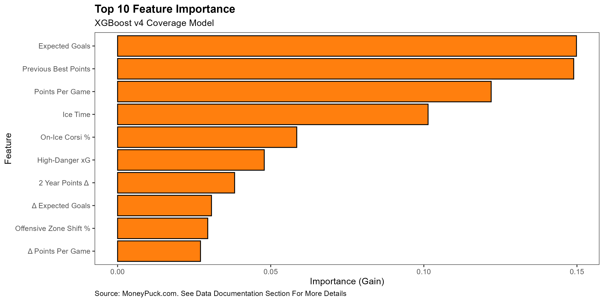
Figure 7 shows that a few features were extremely important, and then more features were less important but still valuable to the model. As seen, Expected Goals and Previous Best Points were the two most important features. This makes logical sense, given that xG is a very telling and useful metric at showing underlying production, while the previous best points feature was most certainly extremely useful at predicting negatives, given the parameters and the unlikelihood of someone with an already relatively high previous career high in points to break out again.
Other important features, such as points per game, Corsi%, or ice time, highlight that underlying offensive generation and opportunity were extremely important predictors for a player’s future. The features that highlighted underlying play were influential predictors. Interestingly, a player’s amount of goals, one of the few features that showed a player’s current production, was not one of the top 10 features based on importance, showing the hypothesis that the underlying metrics mattered more was likely correct.
Understanding the Probabilities
By nature of the model, probabilities are produced rather than binary classifications. There is no threshold of probability that makes a player certain to breakout, but the higher the probability, the more sure we can be that a player might break out if given the opportunity.
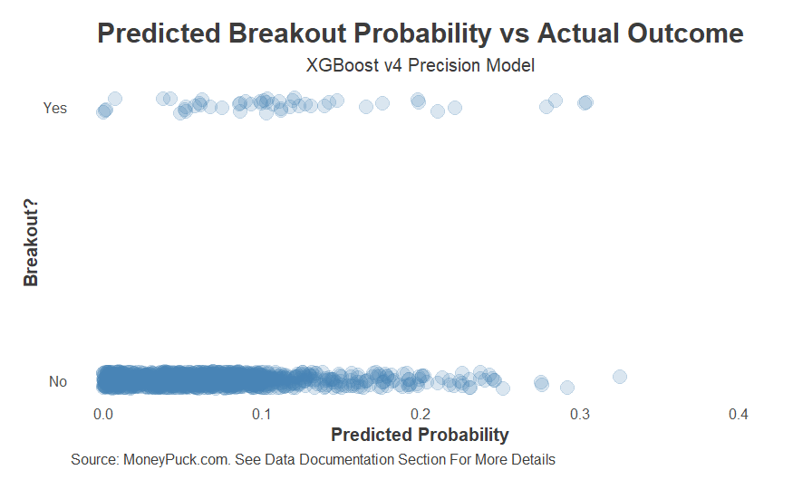
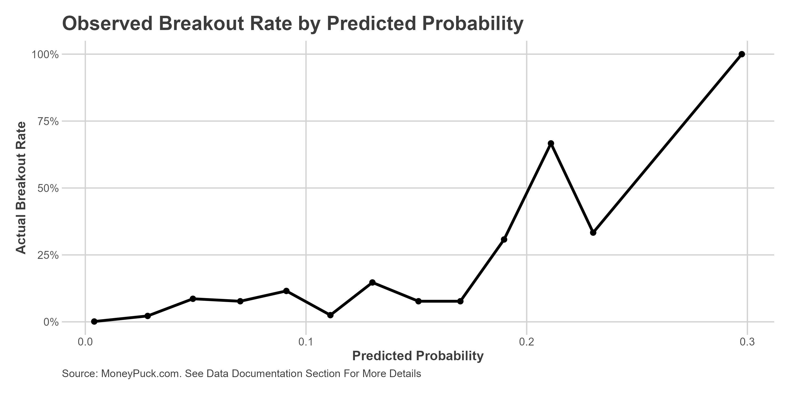
Figure 8 plots the predicted probability against the actual outcomes. While the breakout and non-breakout players are not perfectly separated, indicating no clear threshold for a classification, a clear trend emerges. The players that were assigned high probabilities broke out much more than the players assigned a low probability. This relationship demonstrates that the model indeed captures information about a players future development.
Figure 9 plots the predicted probability against the true breakout rate. Generally, the graph shows that higher probabilities correspond to a higher breakout rate, notably this relationship starts around a predicted prbability of >0.2. While there are some expected deviations, this shows that the model is well calibrated and increasing the predicted probability translates into a meaningful increase in actual likelihood of a breakout.
Distribution of Breakout Probabilities
The distribution of the predicted breakout probabilities can provide more context to the model’s outputs. The following figures illustrate the density and cumulative distribution function of the breakout probabilities.
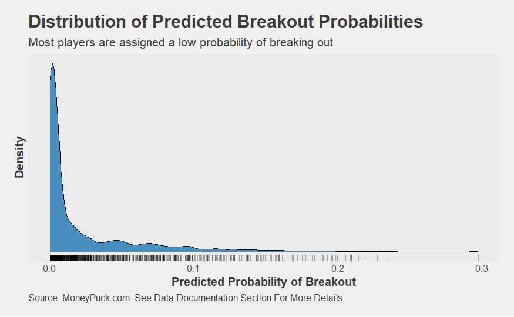
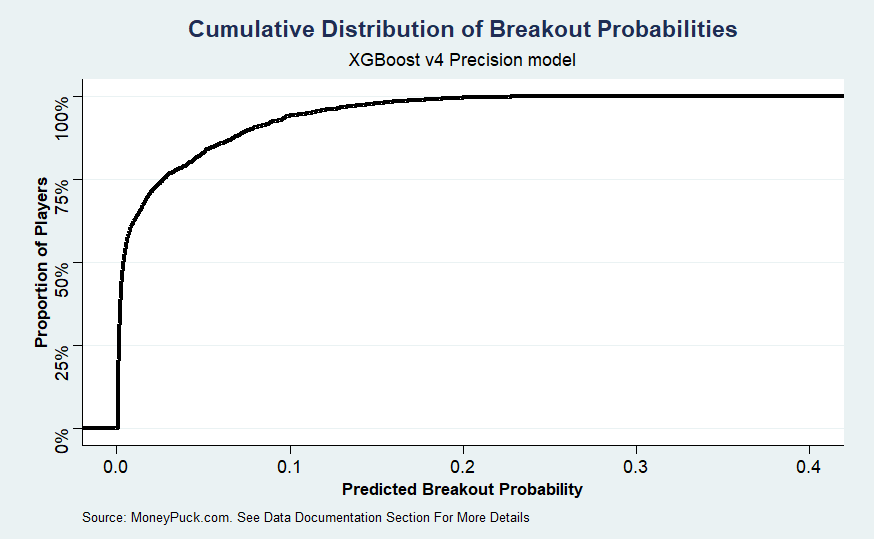
A majority of player-seasons receive a low probability to break out, reflecting the reality that a breakout season is highly uncommon among every single forward in the NHL. Only a small fraction of players achieve a probability above that of the league average.
This skewed distribution reinforces the importance of ranking the players instead of creating a classification threshold. A probability that appears small in isolation can still represent a strong potential to break out given the extremely low density of higher scores.
Ranking Breakout Candidates
The following figure illustrates the ranking process of the model.
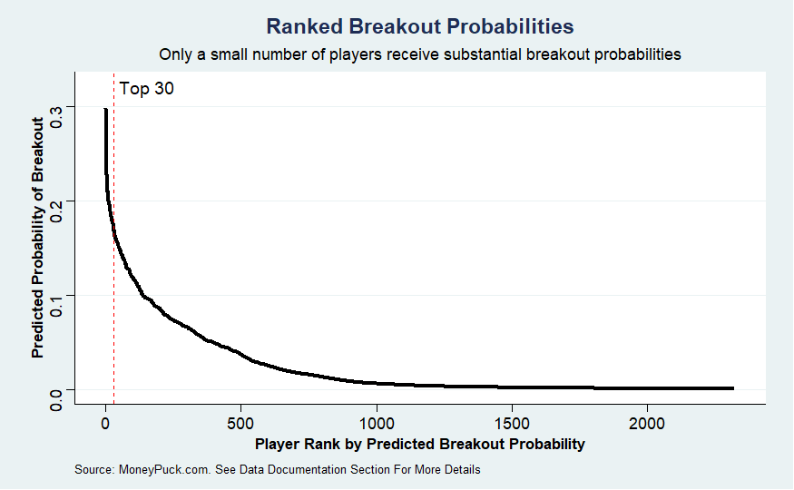
As shown, a small number of players receive the higher probability than the rest of the league, identifying them as a natural set of players that should be investigated for their breakout probability. This framework allows analysis to focus on the most promising players.
To better understand this method of analysis and the model’s patterns, several case studies from the testing dataset are examined in the following section.
Case Studies
To show how the model behaves in practice, six players were selected as case studies. Two of the players represent success stories where the model correctly identified the player as a top-K breakout candidate, and they indeed broke out. The remaining four case studies represent different stories where the model went wrong, whether it be because the model predicted a breakout a season too early, the player failed to live up to the breakout hype, the model outright missed a player, or an interesting case where the player broke out under the model’s radar, but immediately regressed back to where they were before. All together, these examples provide insight into both the successes and limitations of the model.
Wyatt Johnston
Wyatt Johnston as a rookie had all the boxes checked to be a future superstar. He was a first round draft pick, taken by the Dallas Stars with the 23rd pick in the 2021 Draft. He came with high scoring upside, and the coaching staff in Dallas, one of the best teams in the league, was able to harness it nearly immediately, granting Johnston a top-6 role in his first season with experienced linemates in Jamie Benn and Evgeni Dadonov. He shined with 24 goals and 41 points, but the model saw more in him.
Each player of the six case studies as well as every predicted player for next season had a probability card made of them. Figure 13 is Wyatt Johnston’s.

The model put high faith in him, listing Johnston with a 31.7% chance of breakout, the best of any player-season in the testing dataset. Johnston immediately delivered, upping his goals and points production with increased icetime and better positioned himself for goals, raising his underlying metrics even higher. He established himself as one of the league’s top young forwards, but his climb did not stop there.
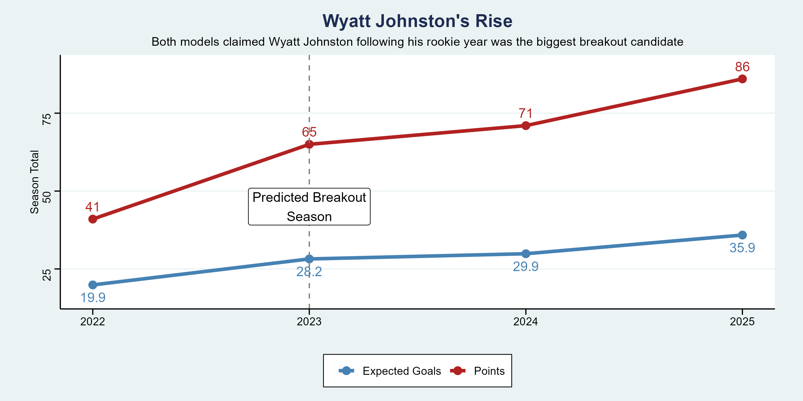
Figure 14 shows Johnston’s career trajectory in terms of points and expected goals. Johnston stayed relatively stagnant the year following his breakout, but last season he cemented himself as a true first line center and superstar, notching his first 40 goal season with 45 tallies and 86 points, while his underlying metrics just got better and better.
With Wyatt Johnston being such an obvious breakout candidate, it’s worth looking into what exactly the model saw in him that was different from everyone else. Figure 15 explores this comparison.
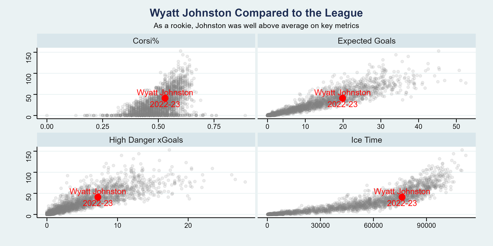
Johnston was above average in every single one of these four stats, which is made even more impressive considering he was just a rookie. The ice time gave him opportunity to shine, which he made the most of with good positioning for solid xG and High Danger xG (HDxG) metrics, and his Corsi% was solid as well.
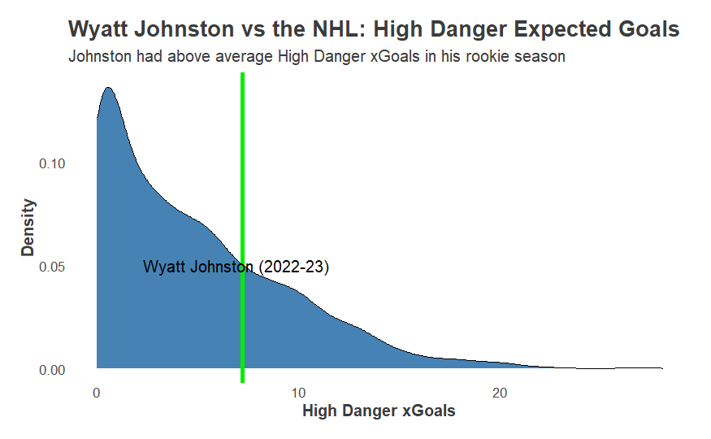
Figure 16 shows Johnston’s HDxG compared to the league. HDxG is an interesting indicator stat because of its uniqueness in telling two stories at the same time: every shot in the league has both a probability to go in the net and become a goal, which contributes to your expected goals, as well as a danger level assigned because of its distance to the net and nature of the play leading to the shot. All high danger shots have an probabillity above .20 of resulting in a goal. HDxG quantifies two things: your shooting ability and your positioning. By having an above average HDxG, you’re displaying an ability to position yourself in good places to get high danger shots off as well as being a good enough shooter to convert those shots into goals.
As a rookie, Johnston found himself in an excellent position compared to the league in HDxG, contributing to why the model found him so promising to take a step forward.
Overall, Johnston’s story shows us the perfect ideal the model is looking for: a player who is already very strong in advanced metrics, but either not matching their points total to their metrics, or who has room to grow metrics wise.
Pavel Zacha
In contrast to the writing-on-the-wall breakout of Wyatt Johnston, the story of Pavel Zacha is a bit more interesting. Pavel Zacha, a former 6th overall pick in 2015, was a player who just couldn’t seem to get over the 35 point hump. From 2019-2020 to 2021-22, Zacha could not play the full year, resulting in 32, 35, and 36 points, respectively, granted two of those seasons were shortened due to COVID. It appeared that might be his ceiling, a .5 PPG player who couldn’t stay fully healthy for an entire year.
The Devils shipped him off to Boston for Erik Haula, a move that would make them money to attempt to make a big splash in free agency. While the Devils gave up on his upside, the model did not.

It gave Zacha a 20.3% chance to break out, which was really high for all player-seasons in the testing set. It believed that his production would eventually match his process, notably seeing that Zacha’s xG was higher than his actual goal count.
A change of scenery proved to be the best thing for Zacha. He played the first full season in his career, and despite losing almost a minute on average ice time, his production rose.
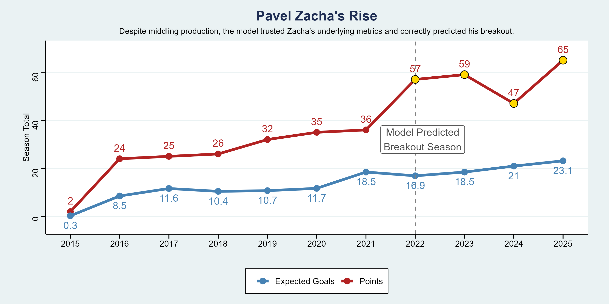
Since joining the Bruins, as we can see in Figure 18, Pavel Zacha’s points total has never dipped below 47, with that being a down year, as he’s been able to stay around 60 points in the other three years. He’s grown into an incredibly productive top six forward, with that first breakout year being the catalyst.
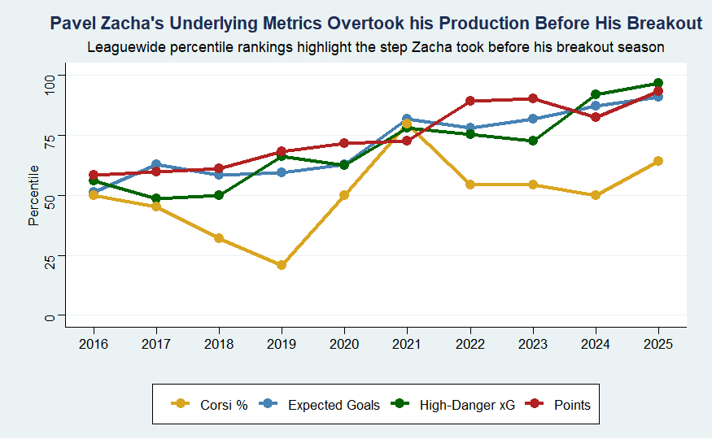
Figure 19 shows Zacha’s percentiles through his career in the relevant stats. In the season before his 22-23 breakout, his underlying metrics all took a massive leap towards around 75th percentile, but his points stayed put at the 65th-70th percentile it was at the season prior. This underlying increase shows an indicator for breakout: when the player’s production is below their underlying process, there is room for them to break out.
In Zacha’s case this happened instantly. His point production the following season rose back up above his production, which admittedly took a tiny dip, and he broke out.
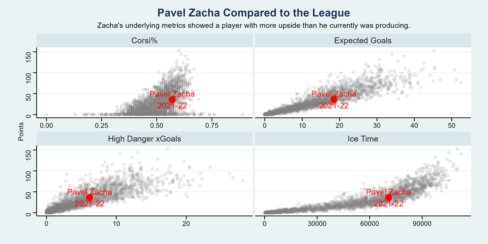
Figure 20 cements Zacha’s incredible process the season prior to his breakout. He was well above average in each of the three underlying stats, and got decent icetime, but his production just wasn’t there. The change of scenery that came with being traded and the jump his points made to catch up to his process led to Zacha’s breakout to stardom.
Zach Benson
While the previous two case studies showed how the model can get it right, the next stories show some interesting stories where the model was not 100% on the mark. Firstly, let’s analyze Zach Benson.
Benson was the 13th overall pick in the 2023 Draft, a highly touted prospect who really only lacked in size. His first season was okay, notching 11 goals and a respectable 30 points in 71 games, flashing potential along the way for a Sabres team that was floundering. The models believed in rookie year Benson to break out, noting his xG being higher than his goal count and the fact that he was well above average in every metric as just a rookie. His probability card is seen below in Figure 21.

However, Benson did not break out in his 2nd season. He got better as a play driver, raising his Corsi% while shooting slightly worse from high danger situations. It was all in all a disappointing second year, but the model reaffirmed its faith in him, giving him a much stronger 26.7% chance to break out, as can be seen in Figure 22. And, for what its worth, Benson did break out!

While Benson still was lacking the goal-scoring touch that the xG would indicate, he was able to increase his point production considerably in his 3rd season, earning him a monster extension that could prove incredible for his Sabres if he pans out even more.
This raises an important consideration, though, about the model. It gave Benson a decent chance to break out, he didn’t, and then it chose him again. It’s definitely worth looking into what the model saw in Benson and see why the model would be early on a player.
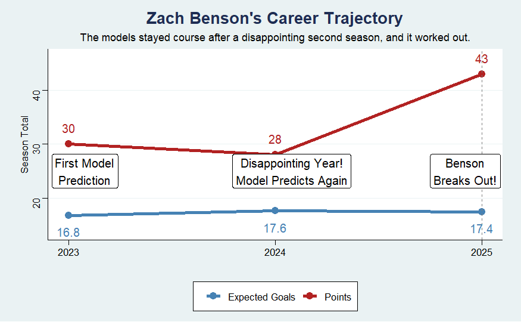
The first interesting development regarding Zach Benson comes from his xG. His xG has remained relatively constant through his 3 years in the NHL, and in all three seasons his goal count was considerably less than his xG. This is relatively uncommon with stars, who usually overperform their metrics a little bit, so it makes sense why the model trusted him. The fact that he still has untapped scoring potential shows the increases Benson may still make in the future. It would not be shocking in the slightest if Benson has a Wyatt Johnston level breakout, going from mid-40s to mid-60s in points, with a jump in goal production.
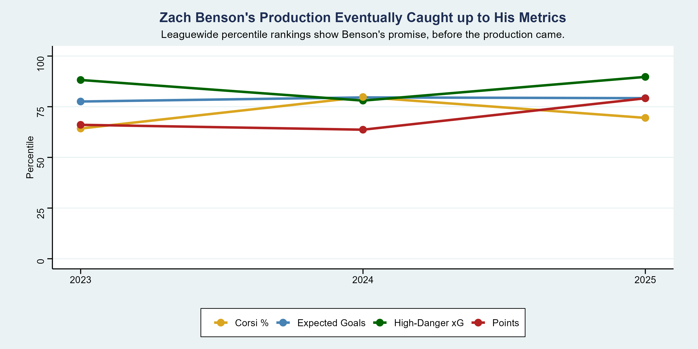
The percentiles still show this room for improvement, as well as why the model loves him. He’s consistently been a 75th or better percentile player in xG and HDxG, and his Corsi% fluctuates between there as well. His points production finally this season began to catch up to the rest, but there’s certainly still room to improve for the 21 year old.
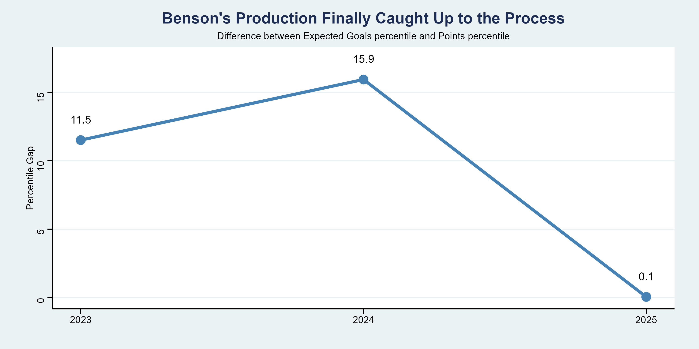
Figure 25 shows the production increase quite plainly. It can be useful to see the xG percentile and points percentile together, but this graph directly shows them in contrast. It took until his 3rd NHL season to do it, but his points production finally matched his xG boom. Again, in context, it’s even more interesting knowing that this production increase did not occur because of Benson scoring more goals.
Benson provides an interesting insight into the model. It takes lots of stock into your underlying production being better than your on ice production, so it makes sense that it loves Zach Benson. His delayed breakout further reaffirms this point, because he did not lose his underlying metrics in his rough sophomore season, rather, he just couldn’t find the production to match. The model still believed in him, though, and he came through.
Connor Zary
Connor Zary is one of the more interesting cases in this project. He’s one of the model’s biggest misses, a false positive. Another former first rounder, Zary came into the league with a lot of potential surrounding him. He got to play for a Calgary team that was going through a bit of a retool, trying to find its footing, and Zary’s rookie season was promising, notching 14 goals and 34 points through 63 games. His following season, much like Zach Benson, was not an improvement, but the model believed in him to break through, much like Benson did.

Unlike Benson, that did not happen. He had by far his worst season yet in 25-26, playing the most games but scoring the least amount of points. While he may still break out next season, especially with the buzz that may come with him being traded away from a bad situation in Calgary (as of 6/25, he has not been traded), it’s worth noting how the model got here. A pretty big swing and a miss.
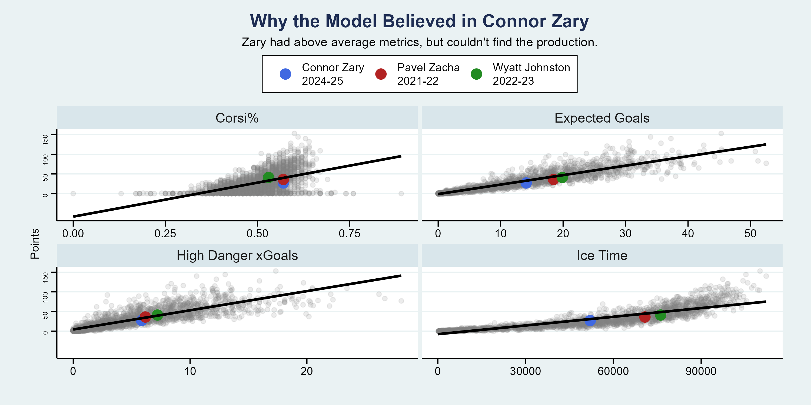
Figure 27 shows why the model believed in him. Compared to Zacha and Johnston, two correct breakout picks, Zary looks pretty comparable. He lagged slightly behind in xG, but notched the same Corsi% as Pavel Zacha and a very similar HDxG as the two. The icetime difference can be explained away by Zary only playing 54 games that season, too. All signs seemed to point towards a Connor Zary breakout, but it didn’t come.
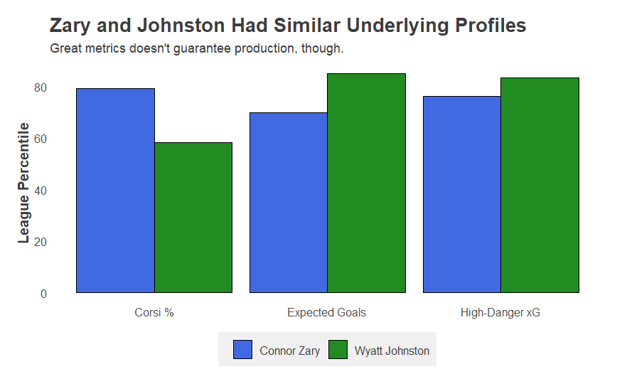
Figure 28 shows a more in depth comparison between Zary and Johnston in the three underlying stats. We see that Zary is much better at producing shots, while Johnston is better at producing high quality shots. This graph shows us that Zary and Johnston are both similar players, both with high upside, only Johnston has found it while Zary has not.
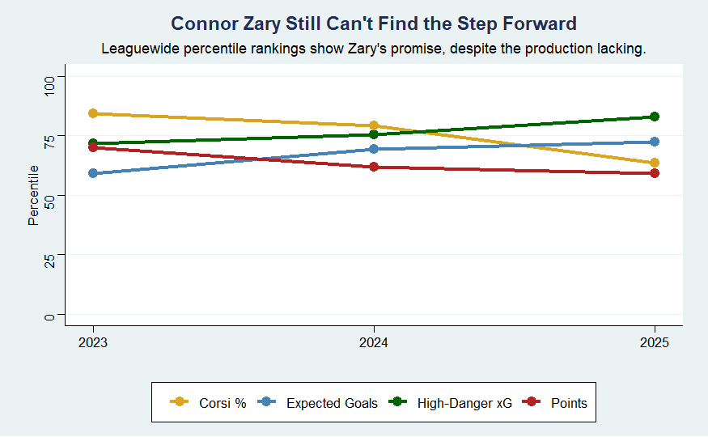
It may be that Zary’s case is like Zach Benson’s, except Zary’s breakout is going to take even longer, if it ever comes. We see in Figure 29 that Zary’s metrics did not go down, aside from his Corsi%, last season, but that his points are still below his metrics.
Whether or not Zary will be able to eventually break out remains to be seen, and the model still has some faith in him, as he is still in the top 20 to break out for next season. It may be that his story is like Zach Benson’s, except with an even more delayed breakout. Either way, this story shows that the model, while solid at predicting breakouts, can still have a miss.
Will Cuylle
Will Cuylle is another interesting miss for the model. Unlike the other players that have been examined so far, Cuylle flew under the radar of the model, and actually broke out.

His probability card hints at an interesting underlying story. Unlike the other players we’ve looked at, Cuylle’s xG metrics both nearly doubled from one season to the next. This doesn’t indicate that he broke out because his production reached his process, this indicates that he simply became a better player in the course of the season, which is something the model is unable to account for.
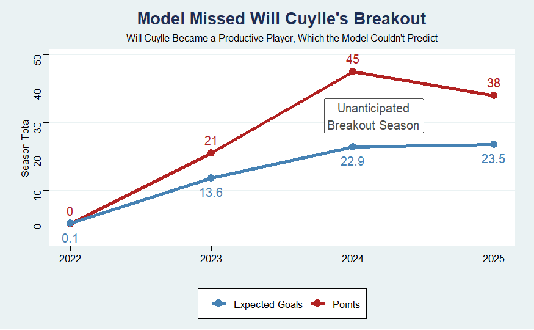
Cuylle’s trajectory shares the same story. Unlike Pavel Zacha who improved before he broke out, Will Cuylle improved his xG and his points the same season. This jump doubled his points total and nearly doubled his xG. A look at his percentile ranks in the figure below helps quantify this further.
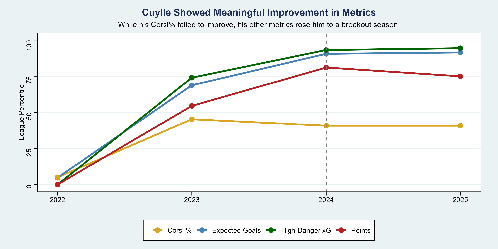
Will Cuylle had an incredible improvement from his first full season to his 2nd, and was able stay consistently there in his third. It raises the question of how the model missed this underlying potential, and how it flew under the rug of everyone. An interesting hint was given in making the probability card, seeing that Cuylle’s icetime dramatically increased, and thus, the next figure was engineered to explore this.
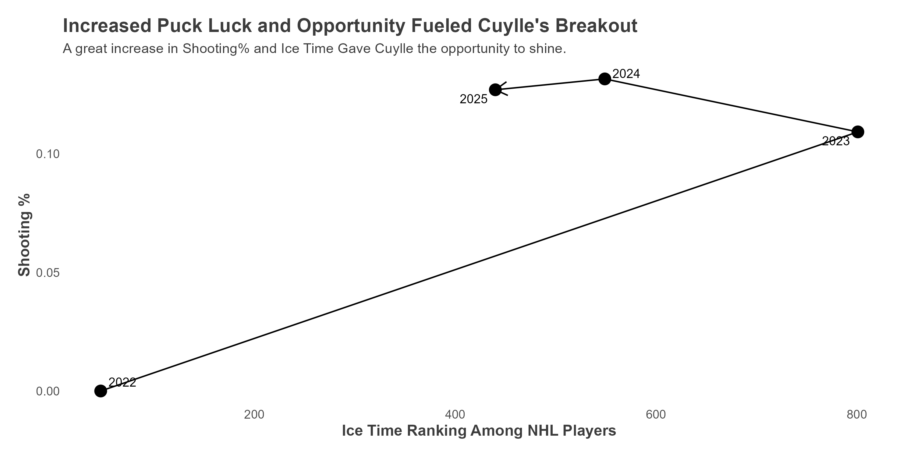
Figure 33 shows a large reason for Will Cuylle’s breakout. His icetime dramatically improved, ranking him in the top 600 as opposed to around 800th in the NHL in ice time. This aligned with a development in his shooting that raised his Shooting %, which led to increased production.
This insight highlights a flaw with the model that could be fixed in the future. Because the model cannot account for an increase in ice time, players like Will Cuylle could fly under the radar and become stars right under the nose of the model. It is difficult to predict future opportunities just on previous statistics alone, however, so this is a reasonable failure of the model, but still an interesting one.
Eetu Luostarinen
Eetu Luostarinen, at first glance to his probability card below, looks to be a similar story to Will Cuylle. A player who seemingly out of nowhere increased his production and became a star, but there is more than meets the eye with Eetu Luostarinen.

Any Panthers fan could tell you that Luostarinen has not hit that points total ever since that 22-23 breakout season, and hasn’t even really been close except for this past season.
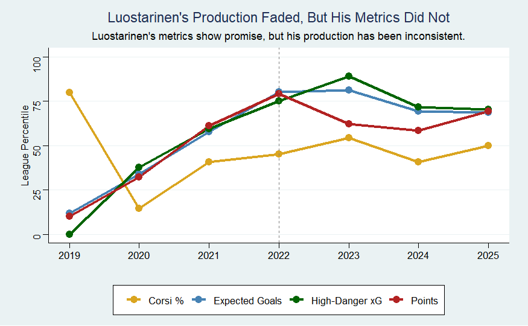
As shown in Figure 35, Eetu Luostarinen made a dramatic improvement in 2022, but he’s completely lacked consistency since. His Corsi% has fluctuated, as well as his xG and HDxG and his points fell flat for a couple of seasons before climbing back to meet the expected goals metrics again this past season. This raises an important question: why did Eetu Luostarinen break out, and why couldn’t he maintain that production?
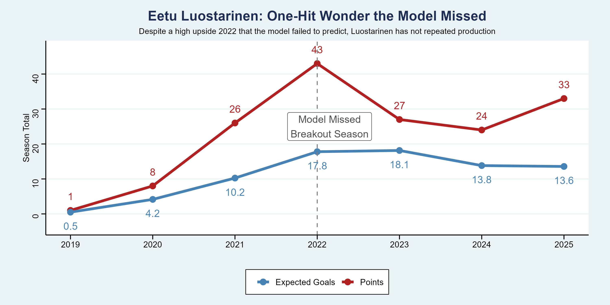
A look at his career trajectory reaffirms the question. His xG indeed went down a couple of seasons following his breakout season, and he hasn’t been able to find the same form as his 22-23 season. A quick look at his icetime totals show that his ice time did not go down on the stacked Florida squad either, his icetime has consistently averaged around 15-16 minutes a night since that breakout season in 22-23.
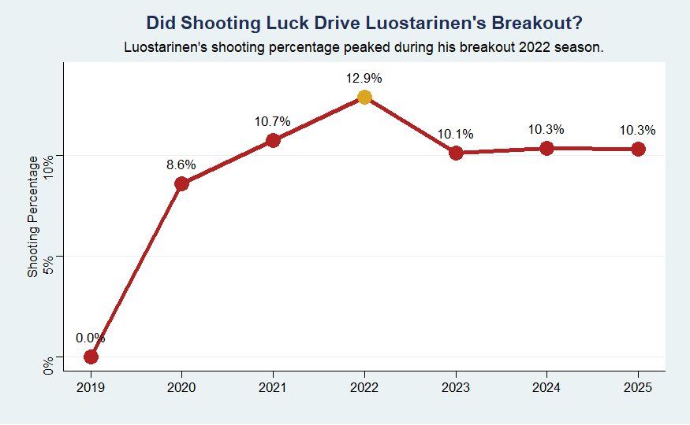
Further investigation, as shown by Figure 37, shows that the answer to what fueled Luostarinen’s breakout was right in front of his profile the entire time. In his breakout 2022 season, Luostarinen peaked his shooting percentage at nearly 13%, a figure that has not been reached before or since. This explains why he scored a career high 17 goals and hasn’t touched 12 since. It also explains another unexplainable phenomenon for the model: career highs are natural progressions of a player’s development, but the model in its current state is unable to predict them happening and explain production away in that way.
However, since Eetu Luostarinen has not reached the heights of his breakout season, it can be argued that while the model missed his breakout, it still bucketed him correctly by not giving him a serious chance to break out, it recognized him not as a future star, but as a more average production player, which has been what he has reached in the seasons since.
Lessons Learned
Through looking at six case studies, several themes and patterns have emerged. It can be seen that successful model predictions of a breakout are often characterized with players who had strong internal play-driving metrics such as xG or Corsi%, but lacked the production to match it. Indicators of this included an xG being higher than the goal count, or just otherwise strong xG, HDxG, and Corsi%.
Missed breakouts were frequently characterized with factors that were more difficult for the model to quantify: changes in ice time, shooting luck, or the passage of time making a player better. Usually, in these misses, higher than normal shooting percentages or deployment were seen compared to the players career averages.
Taken together, these findings suggest that the model is typically effective at identifying suitable breakout profiles while remaining vulnerable to opportunity changes and unusually favorable situations.
After looking at some case studies, the model is now ready to be applied to the current season and ready to produce a list of potential breakout candidates for the 2026-27 NHL season.
2026-27 Predictions
Now that the model has been calibrated with the historical data and they can now be applied to the 2025-26 season to produce breakout candidates for next season, 26-27. The two models have complimentary perspectives, the precision model being more focused on confidence in breakouts, and the coverage model being more focused on identifying a broad pool of breakout candidates.
Precision Model Rankings
Note, for the following table has some players, such as Matvei Michkov, removed. This is because, for some reason, a small number of players slipped through the cracks despite not being eligible to break out.
| Rank | Player | Probability |
|---|---|---|
| 1 | Emil Heineman | 23.0% |
| 2 | Ben Kindel | 21.9% |
| 3 | Mackie Samoskevich | 20.8% |
| 4 | Emmitt Finnie | 20.2% |
| 5 | Morgan Frost | 20.0% |
| 6 | Ryan Leonard | 19.0% |
| 7 | Cole Perfetti | 18.2% |
| 8 | Matt Coronato | 17.8% |
| 9 | Zachary Bolduc | 17.6% |
| 10 | Logan Stankoven | 17.0% |
| 11 | Mason McTavish | 16.8% |
| 12 | Alex Laferriere | 16.6% |
| 13 | Braeden Bowman | 16.4% |
| 14 | Vasily Podkolzin | 15.8% |
| 15 | Matthew Wood | 15.7% |
| 16 | Egor Chinakhov | 14.8% |
| 17 | Josh Doan | 14.8% |
| 18 | Calum Ritchie | 14.7% |
| 19 | Dmitri Voronkov | 14.5% |
| 20 | Arseny Gritsyuk | 14.0% |
From Table 2, several interesting developments can be seen. Firstly, nearly every player in the top 20 is a young forward with not much NHL experience. Some, like Ben Kindel, are coming off of their rookie season. Others have a similar outlook to a player like Wyatt Johnston in terms of production level, such as Alex Laferierre or Morgan Frost. These players have already had decent production levels, but the model still thinks they can go even further.
Another interesting observation is that compared to some of the case studies, the probability of breakouts in this model’s predictions are relatively low. This may simply be because the model does not believe in this season’s players as much as previous seasons, for whatever reason.
Breakout Candidates From the Rankings
From Table 2, I identified five players I believe are worth looking into and picking them to potentially break out this upcoming season. Note, this does not guarantee they will break out, but that they have the profiles that closely match previous breakout candidates and put them in a good spot, in my opinion, to have an increase in production next season.
Emil Heineman
The first player that is one to watch to potentially break out is Emil Heineman. With the highest probability of anyone in the precision model, as shown in Figure 38, Heineman’s first season with the Islanders was a productive one. He was a 20 goal scorer and productive middle sixer for a playoff hopeful Isles team, but he lacked the point production to really put him on the map as a rising star.

Heineman’s high goal production but small points production is very reminiscent of division rival Blue Jackets’ star Kirill Marchenko’s rookie season. Marchenko in 22-23 notched 21 goals and just 4 assists. But, the comparison doesn’t just stop at goals and points.
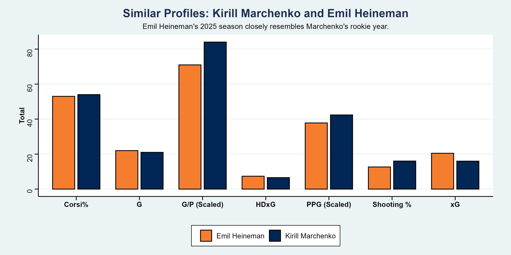
As seen in Figure 39, Kirill Marchenko in 2022-23 and Emil Heineman in 25-26 were remarkably similar players who functioned in very similar ways. They both relied on their raw goal-scoring ability more than playmaking, and it led to them looking nearly identical in goals, xG, HDxG, and Corsi%.
Marchenko did not immediately break out in his second NHL season, at least by the parameters set in this project, but he came extremely close, and his following seasons cemented him as a star. His assist production increased dramatically, leading towards his so-far career year of 31 goals and 74 points in the 24-25 season.
Emil Heineman may position himself down a similar career path. If he can continue his scoring pace while implementing playmaking to his skill set, a massive increase in points production is highly achievable. Although no players have the same exact development, the striking similarity between Heineman and Marchenko provides a compelling example of why the model believes in Heineman’s future.
Mackie Samoskevich
For a while up until his debut in 2023-24, Mackie Samoskevich had been one of the few prospects on a loaded with talent Panthers team. He became a regular player the following season, helping the team in any way he could, and he showed flashes of his brilliance, with 15 goals and 31 points. He remained a bright spot with flashes in the following 25-26 season, losing some of the scoring touch but maintaining the point total.

As seen in Figure 40, the model is absolutely in love with Samoskevich. His Corsi% is top 5 percent of the entire league, and his xG is much more than his actual goal count. His percentiles are incredible, showing a player in the upper echelon of play, but the points still leave something to be desired.
The figure below shows his xG compared to his points throughout his career, showing the meaningful improvement he made from his first full season to his second, but that hasn’t been matched with an increased production level.
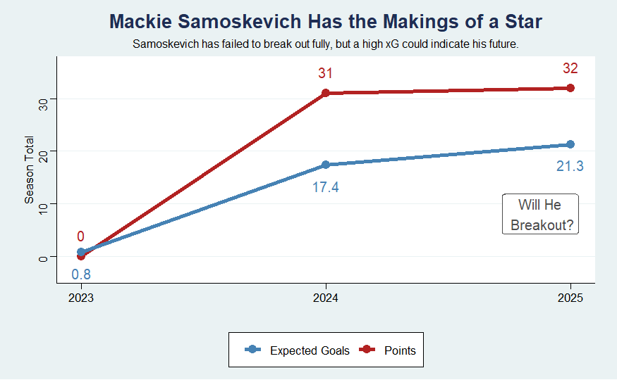
It is obvious there is tons of room to grow for Mackie Samoskevich, the question has always been when. This season might be the answer, as he has been dealt to a more favorable playing-time situation in Seattle. He will get the minutes should he stay healthy, while losing maybe a bit of quality of his linemates. Expect Mackie Samoskevich to feature in the Kraken’s top 6, and maybe he will increase his production to a star-level.
Ben Kindel
Another potential slam-dunk pick for a breakout in 26-27 is Penguins young forward Ben Kindel. Kindel, drafted 11th in 2025, exploded on to the scene with a stellar rookie season. His statline is below in Figure 42.

Like Mackie Samoskevich before him, he isn’t outscoring his production, which builds an easy path to improvement: just simply match your production level. But, like Wyatt Johnston before him, he shows a flash of what could turn him not just into a star, but into a full out superstar for the Penguins team that desperately needs a young star.
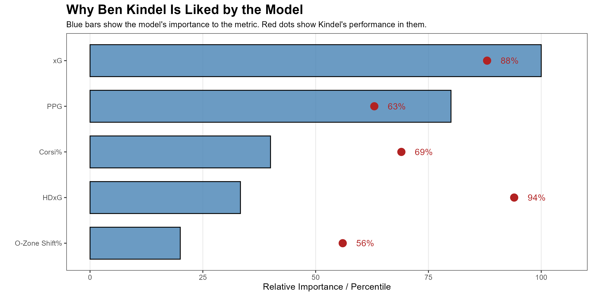
Figure 43 above shows Ben Kindel’s performance on some of the variables the model considered important. Some of these variables were already shown on his probability card, but its worth noting his solid but not extraordinary performance in both PPG and O-Zone Shift%. PPG makes sense, as if it was higher, he’d have no room to break out, but his middle of the road performance in being deployed in the offensive zone shows an easy path to improvement: increased opportunity.
If Ben Kindel was given more opportunity, naturally his goal scoring touch would flourish even more than it already has, and he could build even further off the impressive rookie season, and develop into a star. Expect Ben Kindel to find improvement in the near future, potentially seeing a 60+ point season from him soon.
Logan Stankoven
Logan Stankoven exploded onto the scene as a Stars prospect, showing incredible promise that led to his involvement in the Mikko Rantanen trade, turning Stankoven into a young threat for the Hurricanes. In his first full season in Carolina, he’s put up solid numbers, and helped pave the way for their run all the way to glory in the postseason as a massive contributing factor. But, despite his promise and his skill, his career high points total from this season was just 44 points. The model thinks he can do better.

It gives him one of the highest chances of breakout of anyone in the NHL right now, and it’s easy to see why. He is in a rare club of goal scorers whose xG is higher than their goals, and his Corsi% is incredible, and as much of that credit has to be given to his play driving ability as it does the quality of his team and his linemates. Figure 45 below shows the same percentiles from the card.
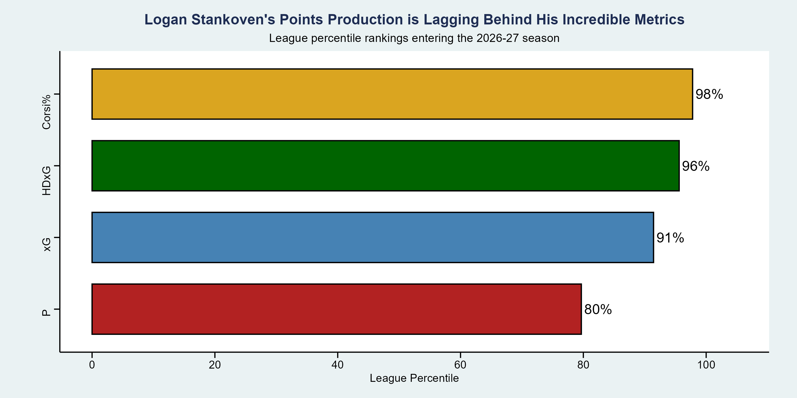
Simply put, this profile is incredible. Stankoven is a top 10% NHLer in three incredibly important underlying metrics, but his point production has not reached that of a superstar quite yet. It makes perfect sense for Stankoven’s next season to be one where he puts himself further on the map, fueled by the incredible cup run and his incredible play.
Matthew Wood
The final breakout candidate I’ve chosen to highlight from the top 20 of the precision model is Matthew Wood. Like some of the players before him, Wood is a former first round prospect turned young promising forward for a team that will kindly appreciate his production.

Unlike some of his peers, however, Matthew Wood does not really pop out as extraordinary. He’s plainly above average in every statistic, which provides a different avenue for him to break out and improve: opportunity.
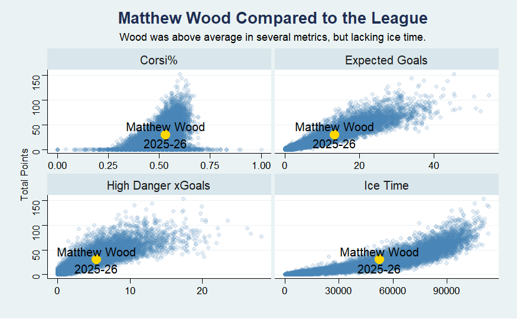
Figure 47 highlights this issue. Matthew Wood is above average in Corsi%, xG, and HDxg, but he is severely lacking in the icetime statistic that could otherwise provide him with the opportunity to be a star. If the Predators deploy him more, give him the 15+ minutes of ice time we saw from other breakout candidates, it would not be a shock at all if Matthew Wood finds himself as a young breakout.
Coverage Model Rankings
| Rank | Player | Probability |
|---|---|---|
| 1 | Mason McTavish | 30.5% |
| 2 | Morgan Frost | 27.0% |
| 3 | Cole Perfetti | 23.6% |
| 4 | Ben Kindel | 23.3% |
| 5 | Logan Stankoven | 23.1% |
| 6 | Ryan Leonard | 21.6% |
| 7 | Bobby Brink | 20.3% |
| 8 | Emmitt Finnie | 20.2% |
| 9 | Tommy Novak | 17.6% |
| 10 | Zachary Bolduc | 17.1% |
| 11 | Dawson Mercer | 16.9% |
| 12 | Jake Debrusk | 16.4% |
| 13 | Jack Roslovic | 15.0% |
| 14 | Egor Chinakhov | 14.7% |
| 15 | Calum Ritchie | 14.4% |
| 16 | Braeden Bowman | 14.2% |
| 17 | Simon Holmstrom | 14.0% |
| 18 | Connor Zary | 13.8% |
| 19 | Dmitri Voronkov | 13.7% |
| 20 | Matthew Wood | 13.6% |
Table 3 above can show us some interesting insights into how the Coverage model operates on a season to season basis. The probabilities are much higher, more like the probabilities from the case studies, but they did taper off and meet with the precision probabilities relatively quickly. A few notable insights: the coverage model included far more players that could be classified as “older” (Jake Debrusk, Jack Roslovic, Tommy Novak) to break out, which could be interpreted as just the model predicting a career year. Similarly, players like Dmitri Voronkov feature on both models, and a breakout threshold for him might just be returning to his form before this season. Another interesting insight is that the precision and coverage models shared more players than they had in the testing dataset in the top 20, perhaps an indicator of how this season’s breakout candidates are.
Out There Breakout Candidates
From the coverage model, I have identified 3 players that were not in the top 20 of either model, but I believe have the profile that could see them break out in 26-27.
Dalibor Dvorsky
Dalibor Dvorsky could be a sneaky breakout in the 26-27 season. Currently set to be the third line center on a Blues team that just added Mason McTavish, Dvorsky showed a bit of upside in his rookie season, finding the back of the net 12 times and boasting a decent underlying profile.

The main reason I believe Dvorsky could find improvement in his second season is because of the upcoming opportunity that will be granted to him. The offseason is still young, but it seems now like the Blues are making meaningful improvements to their top 9. They’ve turned their draft capital and Jordan Kyrou into Mason McTavish and Connor McMichael, and there’s a relatively high likelihood they aren’t done there. With better linemates, and another year in the NHL under his belt, watch out for Dalibor Dvorsky to have a sneaky 20 goal-40 point season.
Drew O’Connor
Drew O’Connor was a nice bright spot on what was a terrible season for the Vancouver Canucks. With 17 goals and an xG of 19, there’s lots of room for O’Connor to develop further as a goal scorer.

His Corsi% is his only weak point, something that can both be attributed to him and the team around him, but his ability to create scoring chances is notable. With a (hopefully) increased quality Vancouver Canucks team next season, O’Connor might find himself as a sneaky breakout, much like that of Pavel Zacha from the case studies.
Gabriel Perreault
The final “out-there” breakout pick that was between 20-50 in the coverage model is Gabe Perreault. As a rookie last season, Perreault found decent production, but definitely left more on the table.

With an extra year of development, more games played, and a potential increase in production, Perreault could quickly become a star for a Rangers team that is desperate for one. His 50% Corsi% is the first thing that needs to improve, but his rockstar 16% shooting percentage staying constant with him taking more shots would certainly lead to a breakout.
Limitations
Several limitations should be considered while interpreting the results of this project.
Firstly, this project relied solely on publicly available player statistics. While the MoneyPuck.com dataset contained many useful metrics, such as xG, Corsi%, etc., it does not account for every possible factor that could influence player development. Variables such as linemate quality, injuries, power-play deployment, age, and organizational success is not accounted for in the dataset, and all might play big roles in whether or not a player breaks out.
Secondly, the definition produced of a breakout was necessarily subjective. This obviously produces a limitation, while the definition provided may be considered well thought out, other definitions and thresholds should be considered and could reasonably produce differing results.
Another limitation to be considered is the relatively low amount of positive observations (breakout players) in the dataset. Player-seasons that can be classified as “breakouts” are quite seldom by nature, resulting in an imbalanced classification problem. While evaluators such as P@K and AUC were used to limit this issue, the small number of breakout players inevitably introduces additional uncertainty into the training of the model and evaluation.
Finally, by nature, player development is inherently unpredictable. Even the most comprehensive and effective statistical model cannot fully anticipate the changes in opportunity, injuries, or other factors that could affect a player’s mindset, play, and development. Consequently, the probabilities given by the model should wholly be taken as probabilities of a breakout rather than an inherent certainty.
Despite these limitations, the models created were consistently able to identify meaningful patterns and statistical signals that were associated with breakout seasons, which can provide valuable demonstrations that machine learning is able to meaningfully provide insight into NHL breakout predictions.
Future Work
The models developed in this project showed an ability to identify breakouts in the NHL, but there are several avenues to move forward to both improve this project and expand it to other facets of hockey analytics.
Improvements
While the XGBoost algorithm provided good results, it still is worth exploring other machine learning approaches. Using methods such as neural networks, time-series approaches, or advanced ensemble methods could be explored to potentially capture things missing in the models used by this project.
Furthermore, there could be a dataset improvement used by incorporating age, linemates, team skill, and other indicators of player ability not utilized in this project. These additional variables would certainly provide deeper insight that might make a model better.
Expansion
This project only focused on forward breakouts. While this decision simplified the process, only creating the need to analyze one group of players, it excludes an entire landscape of NHL players that could be examined.
Future work could develop separate breakout criteria specifically for defensemen, and specific criteria for goalies. For defensemen, this would mean defining value in a much more metric focused way, as offensive production does not necessarily equate to being a good NHL defensemen. For goaltenders, an entirely new dataset could be examined with new criteria and statistics to work with, while learning from the process of this project.
Finally, the most obvious avenue to continue this work is to check back on the model’s predictions later in the season, see what it hit on, and see what it didn’t hit on, and make predictions for the following season. This would allow the model to have an additional season of data to work with, a new set of breakout candidates to explore, and overall be a fun expansion to this project. The 2026-27 set of breakout candidates represent the first iteration of what can become an annually update forecasting system.
Conclusion
Predicting NHL breakouts is a challenging yet enticing problem in hockey analytics. This is due to the inherent complexity of NHL development and the seldom nature of breakout player-seasons. This project sought to address that. It planned to do this by combining machine learning techniques with hockey analytics to identify players that could break out with furthered offensive improvement.
Beginning with publicly available NHL data provided by MoneyPuck.com, a breakout definition was defined and applied to the dataset. Following that, some meaningful features were engineered and applied to create machine learning models using various methods. Then, they were evaluated, and XGBoost was found to be the best machine learning approach, demonstrating a strong ability to evaluate players and find breakout candidates.
Beyond just creating an effective model, the project provided insight into signals and characteristics that frequently preceded breakout seasons. This could be an increase in underlying offensive metrics, increased deployment and opportunity, and recent performance trends that proved more informative than traditional counting stats such as goals or points. At the same time, several situations, such as unpredictable deployment, change in team or deployment, and unforeseen increase in process proved unpredictable for the models.
This project shows that predicting breakouts is not simply a matter of finding players with high point totals that have room to improve. It is more important to recognize the players whose underlying metrics show a story of a player who has not matched their process with their production. These circumstances often preceded breakouts. While no model can perfectly forecast true player development, the models produced here provide a practical approach to this problem.
As newer seasons continue to occur, the data can be expanded, the model can be improved, and updated predictions can be made while refining the model and the process to better understand player development.
Appendix
A. Data Availability
The data used in this project come from MoneyPuck.com. More information on the dataset can both be found in the Data Documentation section of this report, as well as the MoneyPuck website itself. Processed datasets as well as the code for feature engineering, model training, and visualizations can be found in the accompanying GitHub repository.
GitHub Repository: https://github.com/JacobRasmussen06/nhl-breakout-prediction
B. Feature Definitions
Several variables used and referenced throughout this project were engineered via feature engineering. While they are relatively explained when they came up, the following table summarizes the engineered variables and their definitions.
| Feature | Definition |
|---|---|
| ppg | Points per game |
| previous_best_points | Highest previous season point total (otherwise known as career high) |
| experience | Number of NHL seasons played |
| change_points | Change in points from the previous season |
| change_xg | Change in expected goals from the previous season |
| change_icetime | Change in icetime from the previous season |
| points_growth | Relative change in points |
| xg_growth | Relative change in expected goals |
| points_2yr | Two-year change in points |
| xg_2yr | Two-year change in expected goals |
C. Additional Figures
Additional visualizations generated during the creation of this project but excluded from this project due to brevity can be found in the GitHub repository in the /figures page: https://github.com/JacobRasmussen06/nhl-breakout-prediction/tree/main/figures.
D. Reproducibility
This project was developed using R and the tidymodels ecosystem. Major packages that were used throughout the project include:
tidyverse
xgboost
ggplot2
pROC
ggthemes
Session information and package versions can be reproduced using the scripts available in the accompanying GitHub repository.